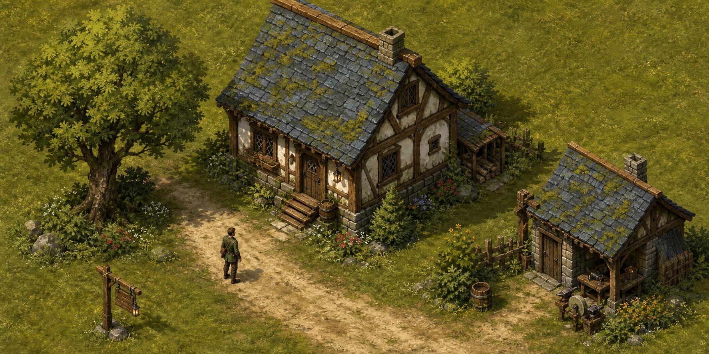
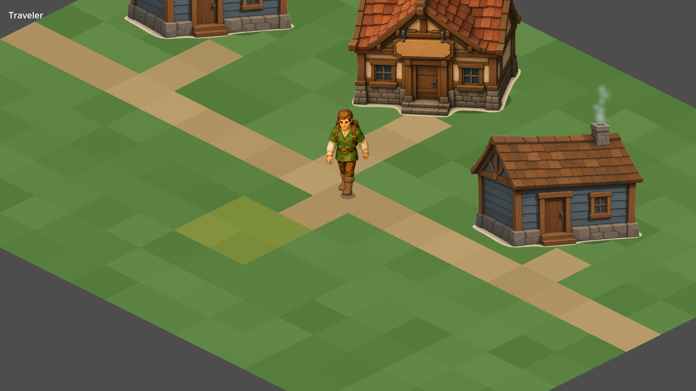

DESIGN ASSESSMENT · 9 SEPTEMBER 2026 · DISCUSSION, NO GAME CHANGESA place that notices you.
The foundation proposes a persistent world where ordinary lives leave history. Scott's skill examples add recognition of the small, peculiar things a person does.

The visual promise
Weathering, irregular path edges, plants, workspaces and shared lighting make this feel inhabited. These relationships matter as much as individual asset quality.
Existing repository style board. Not confirmed as the original chat's concept art.
The current rendered town
Fresh Godot capture from the active town scene, using its own camera. Flat ground and older building assets remain in use. The stronger art direction has not reached this scene.
Direct scene launch, not a full interactive playtest.What the foundation actually contains
All 13 Markdown files were read. The manifesto and commandments establish values. The world bible is empty headings; the team and agent briefs are one-line responsibilities. The foundry states an aspiration: a world specification becoming a playable civilization. There is no code or art in this folder, and the original chat material may be elsewhere.
Worth carrying forward
Citizens with their own lives. Actions with consequences. Knowledge that travels. Simulation deciding facts, with any AI interpretation constrained by those facts. A small authored world is enough to begin exploring these ideas.
Needs a gameplay interpretation
“History matters more than progression” should still allow satisfying personal growth. “Every life path is valid” needs a few supported activities first. The agent roles are useful questions to ask during review, not evidence that multiple standing teams are necessary.
The skill idea
Proposed interpretation of Scott's examples: broad skills change capability; peculiar skills record identity and can occasionally affect a situation. Someone might be a capable fisher and also unusually good at untangling lines. Discovery should acknowledge an experience, without making repetitive clicking the best way to play.
One question for our conversation: is the strongest attraction becoming surprisingly capable, being recognized by the world, or watching a personal story accumulate?
Use Lavish annotations to respond, or continue in chat. These are design suggestions, not approved scope.